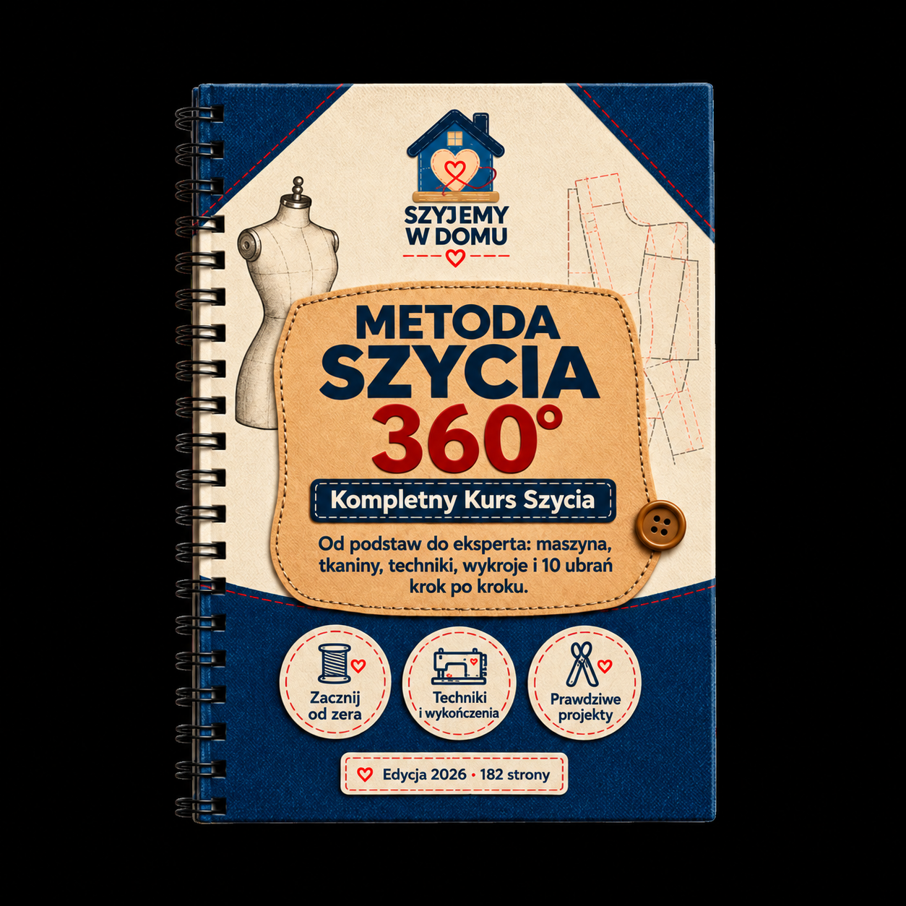

Bonus 1 z 5
Metoda Szycia 360°
Kompletny kurs szycia krok po kroku: od pierwszego ściegu do gotowego ubrania — maszyna, tkaniny, techniki, wykończenia i naprawy.

Biblia Wykrojów Krawiectwa
Spis treści
- 1 · Twoje stanowisko do szycia3
- 2 · Narzędzia i akcesoria12
- 3 · Poznaj swoją maszynę do szycia20
- 4 · Tkaniny: rodzaje, właściwości, dobór32
- 5 · Przygotowanie tkaniny i wykroju44
- 6 · Krojenie52
- 7 · Szycie ręczne58
- 8 · Szycie maszynowe: ściegi i techniki68
- 9 · Szwy i ich wykończenia80
- 10 · Zamki, guziki, zatrzaski i zapięcia90
- 11 · Obrębianie i wykańczanie brzegów100
- 12 · Zaszewki, zakładki, marszczenia i fałdy108
- 13 · Kołnierze, mankiety i paski118
- 14 · Podszewki i wkłady usztywniające128
- 15 · Dopasowanie i poprawki136
- 16 · Naprawy i przeróbki144
- Następny krok152
Sekcja 1
Twoje stanowisko do szycia
Jak zorganizować miejsce pracy, żeby szycie było wygodne, bezpieczne i efektywne.
Dobrze zorganizowane stanowisko to połowa sukcesu. Zanim usiądziesz do maszyny, zadbaj o przestrzeń, oświetlenie i ergonomię — a szycie stanie się przyjemnością, nie walką z bałaganem.
Wybór miejsca
Idealnie: osobny pokój lub kąt z dostępem do gniazdka i okna. Jeśli szyjesz na stole kuchennym — nic złego, ale potrzebujesz pudła, w którym zmieścisz wszystko po sesji. Stół powinien mieć blat co najmniej 120 × 60 cm, stabilny i na wysokości 74-78 cm.
Oświetlenie
Najważniejsze to światło padające z lewej strony (jeśli szyjesz prawą ręką). Lampa biurkowa z żarówką LED o temperaturze 4000-5000 K daje najbardziej naturalne oddanie kolorów. Unikaj szycia w samym świetle sufitowym — rzuca cień na igłę.
- Ustaw lampę z lewej strony — światło powinno padać na płytkę igłową, nie na twoje oczy.
- Dodaj drugą lampę za maszyną — eliminuje cień na tylnym obszarze tkaniny.
- Przetestuj kolory — pod wybranym oświetleniem porównaj kolor nitki z tkaniną.
Ergonomia — jak siedzieć
Krzesło z regulacją wysokości. Stopy na podłodze (lub na podnóżku), kolana zgięte pod kątem ~90°, łokcie lekko poniżej blatu. Maszyna przesunięta tak, żeby igła była na wprost twojego nosa, nie na wprost prawej ręki.
WskazówkaCo 45 minut rób przerwę — wstań, rozciągnij nadgarstki, ramiona i kark. Szycie napina te same mięśnie co praca przy komputerze.
Organizacja materiałów
| Strefa | Co w niej trzymasz | Jak zorganizować |
|---|
| Przy maszynie | Nożyczki, pruwalka, szpilki, taśma miernicza | Mały organizer magnetyczny lub kubek |
| Na blacie | Tkanina nad którą pracujesz, wykrój | Blat wolny od zbędnych rzeczy |
| Na półce / w szafce | Nici, szpulki, zamki, guziki | Przezroczyste pojemniki, opisane etykietami |
| Pod stołem / obok | Kosz na ścinki, żelazko z deską do prasowania | Kosz w zasięgu ręki, deska złożona pionowo |
| Osobna szuflada | Wykroje, szablony, dokumentacja | Teczki formatu A3, opisane po nazwie projektu |
Prasowanie — nieodłączna część szycia
Żelazko z funkcją pary to jedno z najważniejszych narzędzi krawieckich. Prasuj każdy szew zaraz po uszyciu — nie na końcu. Deska do prasowania powinna stać obok maszyny, w odległości jednego kroku.
- Prasuj szew zamknięty — najpierw dociśnij szew w pozycji, w jakiej go uszyłeś (oba naddatki razem).
- Rozłóż naddatki — rozchyl naddatki na boki i dociskaj żelazkiem wzdłuż linii szycia.
- Prasuj od strony prawej — odwróć element i wygładź z prawej strony przez ściereczkę do prasowania.
Częsty błądPrasowanie ruchem posuwistym (jak przy zwykłym prasowaniu ubrań) rozciąga tkaninę. W krawiectwie dociskaj i podnoś żelazko — nie przesuwaj.
Checklist: moje stanowisko jest gotowe
- Stół stabilny, na odpowiedniej wysokości
- Lampa z lewej strony, światło 4000-5000 K
- Krzesło z regulacją wysokości
- Deska do prasowania w zasięgu jednego kroku
- Żelazko z funkcją pary, napełnione wodą
- Organizer na szpilki, pruwalki i nożyczki przy maszynie
- Kosz na ścinki pod stołem
- Wszystkie materiały do bieżącego projektu na blacie, reszta schowana
Sekcja 2
Narzędzia i akcesoria
Co naprawdę potrzebujesz na start — i co warto dokupić z czasem.
Nie musisz kupować wszystkiego na raz. Zacznij od absolutnego minimum i rozbudowuj zestaw, gdy przyjdzie taka potrzeba. Poniżej znajdziesz podział na trzy poziomy.
Poziom 1: absolutne minimum
| Narzędzie | Do czego służy | Na co zwrócić uwagę |
|---|
| Nożyczki krawieckie (20-25 cm) | Krojenie tkanin | Ergonomiczny uchwyt, ostrza ze stali nierdzewnej. Nigdy nie tnij nimi papieru — tępią się. |
| Małe nożyczki / obcinak do nitek | Przycinanie nitek, nacięcia | Powinny leżeć przy maszynie. Sprężynowe są najszybsze. |
| Szpilki krawieckie (cienkie, z główką) | Łączenie warstw tkaniny przed szyciami | Szklane główki — nie topią się od żelazka. |
| Taśma miernicza (150 cm) | Pomiary ciała i tkaniny | Z włókna szklanego — nie rozciąga się z czasem. |
| Kreda krawiecka / marker zmywalny | Zaznaczanie na tkaninie | Kreda: na ciemnych tkaninach; marker zmywalny: na jasnych. |
| Pruwalka (paraček) | Prucie błędnych ściegów | Z osłonką na ostrze. Wymieniaj regularnie — tępe rwie tkaninę. |
| Igły ręczne (zestaw) | Fastrygowanie, obszycia ręczne | Zestaw rozmiarów 3-9. Dłuższe do fastrygi, krótsze do drobnych prac. |
| Nici do maszyny | Szycie maszynowe | Poliester jest uniwersalny. Kolor dopasowany do tkaniny. |
Poziom 2: gdy zaczniesz szyć regularnie
Nóż krążkowy + mata do cięcia
Szybsze i dokładniejsze krojenie niż nożyczkami. Idealny do linii prostych i delikatnych tkanin. Mata samogojąca A3 lub większa.
Linijka krawiecka (60 cm)
Przezroczysta, z naniesioną siatką centymetrową. Niezbędna z nożem krążkowym i do zaznaczania naddatków na szwy.
Naparstki i ochraniacze na palce
Chronią palce przy szyciu ręcznym grubych tkanin. Silikonowe są wygodniejsze niż metalowe.
Magnes do szpilek
Zbiera szpilki jednym ruchem. Stawiasz obok maszyny — szpilki same się łapią.
Stopka do wszywania zamków
Zastępuje standardową stopkę, gdy wszywasz zamek kryty lub zwykły. Wąska, z jednym ząbkiem.
Poduszeczka do prasowania (ham)
Kształtka do prasowania zaszewek, zagięć, okrągłych form. Można zrobić samemu z resztek tkaniny i trocin.
Poziom 3: narzędzia zaawansowane
| Narzędzie | Kiedy jest potrzebne |
|---|
| Overlock (owerlok) | Profesjonalne obszycie brzegów, szycie dzianin. Nie zastępuje maszyny — uzupełnia ją. |
| Manekin krawiecki (regulowany) | Dopasowanie, drapowanie, modelowanie na formie 3D. |
| Prasa krawiecka | Prasowanie dużych powierzchni (kurtki, płaszcze) z równomiernym naciskiem. |
| Nóż do dziurek (punch) | Wycinanie precyzyjnych otworów pod oczka, zatrzaski, nity. |
| Kalkulator tkanin | Obliczanie zużycia materiału na podstawie wykroju i szerokości tkaniny. |
ZasadaKupuj narzędzia po jednym, gdy naprawdę ich potrzebujesz. Lepsza jedna para dobrych nożyczek niż dziesięć tanich gadżetów, które leżą w szufladzie.
Jak dbać o narzędzia
- Nożyczki — ostrz raz na pół roku u szlifierza (nie domowym ostrzałką). Przechowuj zamknięte, w etui.
- Szpilki — wyrzucaj zgięte i tępe. Tępa szpilka ciągnie nitkę w tkaninie.
- Taśma miernicza — co pół roku porównaj z linijką metalową. Jeśli się rozciągnęła — wymień.
- Pruwalka — wymieniaj ostrze co 2-3 miesiące intensywnego użytkowania.
- Nóż krążkowy — wymiana ostrza, gdy trzeba naciskać mocniej niż zwykle.
Igły — twoje najważniejsze "jednorazowe" narzędzie
| Typ igły (maszyna) | Rozmiar | Do jakiej tkaniny |
|---|
| Uniwersalna (universal) | 70/10 – 90/14 | Bawełna, len, mieszanki — do większości projektów |
| Kulkowa (ball point) | 70/10 – 90/14 | Dzianiny — nie przebija oczek, tylko je rozsuwa |
| Stretch | 75/11 – 90/14 | Lycra, elastyczne dzianiny — zapobiega pomijaniu ściegów |
| Jeans | 90/14 – 110/18 | Dżins, brezent, grube tkaniny — wzmocniony trzpień |
| Microtex | 60/8 – 80/12 | Jedwab, organza, tafta — bardzo ostra, nie zostawia dziurek |
| Skóra (leather) | 80/12 – 110/18 | Skóra naturalna, sztuczna — ostrze tnące w kształcie klina |
| Do haftu (embroidery) | 75/11 – 90/14 | Haft maszynowy — większe uszko na grubszą nić |
| Dwuigłowa (twin) | 1.6 – 4.0 mm rozstaw | Dekoracyjne podwójne ściegi, obrębianie dzianin |
Kiedy wymienić igłęWymieniaj igłę maszynową co 8-10 godzin szycia lub po każdym większym projekcie. Tępa igła to: pomijanie ściegów, zrywanie nitek, stukanie, uszkodzenie tkaniny. Jeśli słyszysz ciche „puk-puk" przy szyciu — igła jest tępa.
Nici — co warto wiedzieć
| Rodzaj nici | Zastosowanie | Uwagi |
|---|
| Poliester | Uniwersalne, do wszystkiego | Wytrzymałe, elastyczne, nie kurczą się w praniu |
| Bawełna | Tkaniny bawełniane, pikowanie | Mniej elastyczne, mogą się kurczyć. Piękne wykończenie. |
| Jedwab | Delikatne tkaniny, fastrygowanie | Nie zostawia śladów po usunięciu — idealne do fastrygi. |
| Nylonowe (transparentne) | Niewidoczne obszycia | Trudniejsze w obsłudze, mogą się topić od żelazka. |
| Topstitch (grubsze) | Dekoracyjne ściegi wierzchnie | Wymagają igły z większym uszkiem (topstitch lub 90/14+). |
Checklist: mój zestaw startowy
- Nożyczki krawieckie 20-25 cm (ostre, nowe)
- Obcinak do nitek / małe nożyczki
- Szpilki ze szklanymi główkami (minimum 50 sztuk)
- Taśma miernicza 150 cm (z włókna szklanego)
- Kreda krawiecka lub marker zmywalny
- Pruwalka z osłonką
- Zestaw igieł ręcznych (rozmiary 3-9)
- Igły maszynowe uniwersalne 80/12 (opakowanie 5 szt.)
- Nici poliester: biały, czarny i 2-3 kolory do bieżących projektów
- Żelazko z parą + deska do prasowania
Sekcja 3
Poznaj swoją maszynę do szycia
Budowa, nawlekanie, naciąg, szpulka dolna — i rozwiązywanie typowych problemów.
Nie musisz znać każdego śrubka — ale musisz wiedzieć, jak działa naciąg, jak nawlec maszynę i co zrobić, gdy coś przestaje działać. To zaoszczędzi ci godzin frustracji.
Anatomia maszyny — kluczowe elementy
| Element | Gdzie jest | Co robi |
|---|
| Koło zamachowe (handwheel) | Prawy bok maszyny | Ręczne podnoszenie i opuszczanie igły. Kręcisz ZAWSZE do siebie (przeciwnie do wskazówek zegara). |
| Naciąg górny (tension dial) | Przód maszyny, pokrętło z cyframi | Reguluje siłę naciągu górnej nici. Norma: 4-5 dla większości tkanin. |
| Dźwignia naprężacza (take-up lever) | Nad igłą, ruchomy element | Podciąga nić po każdym ściegu. Musi być w najwyższym punkcie przed wyjęciem tkaniny. |
| Stopka dociskowa (presser foot) | Nad płytką igłową | Przytrzymuje tkaninę. Podnoszenie: dźwignia z tyłu lub boku. Podniesiona → nawlekanie, zmiana stopki. |
| Ząbki transportu (feed dogs) | W płytce igłowej | Przesuwają tkaninę pod stopką. Nie ciągnij tkaniny ręcznie — ząbki robią to za ciebie. |
| Szpulka dolna (bobbin) | Pod płytką igłową, w bębenku | Dostarcza dolną nić. Metal lub plastik — używaj tylko typu pasującego do twojej maszyny. |
| Płytka igłowa (needle plate) | Metalowa powierzchnia pod stopką | Ma otwór na igłę i linie prowadzące (5 mm, 10 mm, 15 mm od igły) — to twój „naddatek na szew". |
| Regulator długości ściegu | Pokrętło lub przycisk | Norma: 2.5 mm. Fastrygowanie: 4-5 mm. Ściegi wzmacniające: 1.5-2 mm. |
| Regulator szerokości ściegu | Pokrętło lub przycisk | Dotyczy ściegów zygzakowych i ozdobnych. Ścieg prosty = 0. |
| Nawlekacz automatyczny | Na głowicy igły (nie każda maszyna) | Wciąga nić przez uszko igły. Oszczędza czas i nerwy. |
Jak nawlec maszynę — krok po kroku
- Podnieś stopkę dociskową — otwiera dyski naciągu i pozwala nici swobodnie przejść.
- Umieść szpulę nici na trzpieniu — nić powinna się odwijać zgodnie ze wskazówkami na maszynie (zwykle do tyłu i w lewo).
- Przeprowadź nić przez pierwszy prowadnik — najczęściej u góry maszyny, mały metalowy haczyk.
- Wciągnij nić w kanał naciągu — nić schodzi w dół, zakłada się na dyski naciągu i wraca do góry.
- Zahacz na dźwigni naprężacza — nić musi przejść przez uszko dźwigni, która jest w najwyższym punkcie.
- Przeprowadź w dół do igły — przez dolne prowadniki aż do uszka igły.
- Nawlecz igłę — nić wchodzi od przodu (od strony ostatniego prowadnika). Użyj nawlekacza, jeśli go masz.
- Wyciągnij nić dolną — przytrzymaj nić górną, pokręć kołem zamachowym jeden pełny obrót do siebie. Nić górna wyciągnie pętlę dolnej nici. Pociągnij obie nici do tyłu, pod stopkę.
Najczęstszy błąd nawlekaniaNawlekanie z opuszczoną stopką. Dyski naciągu są wtedy zamknięte i nić nie wchodzi między nie — efekt: luźne ściegi, kłębienie się nici na spodzie tkaniny. Zawsze podnoś stopkę przed nawlekaniem.
Szpulka dolna — nawijanie i zakładanie
- Umieść pustą szpulkę na trzpieniu nawlekacza — najczęściej po prawej stronie u góry maszyny.
- Przeprowadź nić z głównej szpuli — przez prowadnik do nawijania (zwykle obok) i nawiń 2-3 razy ręcznie na szpulkę.
- Przesuń trzpień w prawo (lub wciśnij) — to odłącza igłę i włącza tryb nawijania.
- Wciśnij pedał — szpulka nawija się. Zatrzymaj, gdy jest pełna w 80% (nie do krawędzi).
- Odetnij nić i wyjmij szpulkę.
- Włóż szpulkę do bębenka — nić odwijana w kierunku wskazanym na maszynie (zwykle przeciwnie do wskazówek zegara). Wciągnij nić w szczelinę bębenka.
- Zamknij pokrywę — lub wsuń bębenek do obudowy (maszyny z bębenkiem wyciąganym).
Złota zasadaGórna i dolna nić powinny być tego samego rodzaju i grubości. Mieszanie (np. poliester na górze + bawełna na dole) powoduje nierówne ściegi i zrywanie.
Naciąg — klucz do równych ściegów
Prawidłowy ścieg: splecenie nici górnej i dolnej następuje dokładnie w środku grubości tkaniny. Nie widać go ani z góry, ani od dołu.
| Objaw | Przyczyna | Rozwiązanie |
|---|
| Nić dolna widoczna na górze | Naciąg górny za duży | Zmniejsz o 1 (np. z 5 na 4) |
| Nić górna widoczna na spodzie | Naciąg górny za mały | Zwiększ o 1 (np. z 4 na 5) |
| Pętelki na spodzie tkaniny | Nić nie weszła w dyski naciągu | Podnieś stopkę, nawlecz jeszcze raz |
| Ścieg zbyt ciasny (tkanina się marszczy) | Naciąg za duży na obu niciach | Zmniejsz naciąg górny o 1-2. Sprawdź też długość ściegu. |
| Ścieg zbyt luźny (można wyciągnąć nici) | Naciąg za mały | Zwiększ naciąg górny. Sprawdź, czy szpulka jest prawidłowo założona. |
Test naciągu na próbce
- Złóż dwa kawałki tej samej tkaniny — dokładnie tej, którą będziesz szyć.
- Uszyj linię prostą 10 cm — ściegiem prostym, długość 2.5 mm.
- Obejrzyj z obu stron — ścieg powinien wyglądać tak samo od góry i od dołu.
- Pociągnij tkaninę prostopadle do szwu — jeśli nić pęka, naciąg jest za duży. Jeśli się rozsuwa, za mały.
- Koryguj o 0.5-1 i powtórz — aż znajdziesz idealne ustawienie dla tej tkaniny.
Notatnik naciąguZapisuj ustawienia, które działają: „Bawełna średnia: igła 80, naciąg 4.5, ścieg 2.5". To oszczędzi ci próbek przy kolejnym projekcie z tej samej tkaniny.
Stopki maszynowe — które naprawdę używasz
| Stopka | Do czego | Kiedy zakładasz |
|---|
| Standardowa (A / ogólna) | Ściegi proste i zygzakowe | 90% czasu. Domyślna. |
| Do zamków (zipper foot) | Wszywanie zamków zwykłych i krytych | Gdy szyjesz blisko zamka — wąska, jeden ząbek. |
| Do guzików | Przyszywanie guzików maszyną | Ząbki transportu opuszczone, zygzak dopasowany do guzika. |
| Do obrębiania (hemmer foot) | Wąskie podwinięcia (1-3 mm) | Cienkie tkaniny: chusteczki, bluzki. |
| Do szycia krawędziowego | Prowadzenie tkaniny wzdłuż brzegu | Ściegi dekoracyjne, topstitch dokładnie 1-2 mm od krawędzi. |
| Do ściegu krytego (blind hem) | Niewidoczne obrębianie | Spódnice, spodnie — ścieg ledwo widoczny z prawej strony. |
| Stopka krocząca (walking foot) | Przesuwanie wielu warstw jednocześnie | Pikowanie, skóra, grube tkaniny, dopasowywanie wzorów. |
15 najczęstszych problemów i rozwiązania
| Problem | Przyczyna | Rozwiązanie |
|---|
| Nić górna się zrywa | Tępa igła, zła nić, zły naciąg | Wymień igłę. Sprawdź, czy nić nie zahacza. Zmniejsz naciąg. |
| Nić dolna się zrywa | Źle założona szpulka, brud w bębenku | Wyjmij szpulkę, wyczyść bębenek pędzelkiem, załóż od nowa. |
| Pomijanie ściegów | Tępa lub krzywa igła, zły typ igły | Wymień igłę na nową. Dla dzianin: igła kulkowa lub stretch. |
| Pętelki na spodzie | Źle nawleczona nić górna | Podnieś stopkę, nawlecz od nowa z podniesioną stopką. |
| Tkanina się marszczy | Naciąg za duży, igła za gruba, ścieg za długi | Zmniejsz naciąg, użyj cieńszej igły, skróć ścieg do 2.0-2.5 mm. |
| Tkanina nie przesuwa się | Ząbki transportu opuszczone lub zatkane | Podnieś ząbki (przełącznik pod płytką). Wyczyść z resztek nitek. |
| Igła się łamie | Za cienka igła na grubą tkaninę, ciągnięcie tkaniny | Użyj grubszej igły. Nie ciągnij tkaniny — pozwól ząbkom ją prowadzić. |
| Maszyna hałasuje | Brak oliwienia, resztki nici w bębenku | Wyczyść bębenek. Naoliwij wg instrukcji (1-2 krople oleju maszynowego). |
| Ściegi nierówne | Nierówna prędkość pedału | Ćwicz na próbce bez nici. Szyj średnią, stałą prędkością. |
| Maszyna się zacina | Kłąb nici pod płytką | Wyłącz maszynę. Odetnij nić. Wyjmij płytkę i wyciągnij kłąb. Nawlecz od nowa. |
| Nie łapie dolnej nici | Igła za wysoko lub za nisko | Sprawdź, czy igła jest wsunięta do końca i dokręcona. Wymień na nową. |
| Ściegi „cofają się" | Przesuw w tył włączony | Upewnij się, że dźwignia cofania nie jest zablokowana. |
| Tkanina się wciąga w otwór | Otwór w płytce za duży, cienka tkanina | Użyj płytki do ściegów prostych (mniejszy otwór) lub podłóż bibuły pod tkaninę. |
| Nić się supła przy starcie | Nici nie wyciągnięte do tyłu | Przed rozpoczęciem szycia: obie nici (górna i dolna) wyciągnięte 10-15 cm do tyłu pod stopką. |
| Nieprawidłowa długość ściegu | Zły regulator, tkanina ciągnięta ręcznie | Ustaw na 2.5 mm i nie ciągnij tkaniny — lekko prowadź dłońmi. |
Checklist: maszyna gotowa do szycia
- Igła nowa, odpowiedniego typu i rozmiaru
- Nić górna nawleczona z podniesioną stopką
- Szpulka dolna nawinięta równomiernie, założona prawidłowo
- Nić dolna wyciągnięta na wierzch
- Obie nici wyciągnięte 10-15 cm do tyłu
- Naciąg ustawiony (domyślnie: 4-5)
- Długość ściegu: 2.5 mm
- Ścieg prosty, szerokość = 0
- Test na próbce — ścieg równy, bez marszczenia
Sekcja 4
Tkaniny: rodzaje, właściwości, dobór
Jak rozpoznać tkaninę, dobrać do projektu i przygotować do szycia.
Dobór tkaniny to najważniejsza decyzja w każdym projekcie. Zły materiał może zepsuć najlepszy wykrój — a dobry materiał wybaczy drobne błędy w szyciu.
Tkaniny tkane vs. dzianiny
Tkaniny tkane (woven)
Struktura: osnowa + wątek, krzyżujące się pod kątem prostym.
Właściwości: nie rozciągają się (lub minimalnie), mają osnowę (wzdłuż) i wątek (w poprzek). Strzępią się na brzegach.
Przykłady: bawełna, len, satyna, szyfon, dżins, tweed, tafta.
Szycie: igła uniwersalna, stopka standardowa, ścieg prosty.
Dzianiny (knit)
Struktura: pętelki zaczepione jedna o drugą (jak w swetrze).
Właściwości: rozciągają się w jednym lub obu kierunkach. Nie strzępią się (lub mało).
Przykłady: jersey, interlock, rib (ściągacz), polar, lycra.
Szycie: igła kulkowa lub stretch, stopka krocząca (lub ząbki obniżone), ścieg zygzakowy lub overlock.
Najczęstsze tkaniny tkane — przewodnik
| Tkanina | Skład | Waga | Do czego | Igła | Pranie |
|---|
| Bawełna (popelina) | 100% bawełna | Lekka-średnia | Koszule, sukienki, podszewki | Universal 80 | Prać i prasować na gorąco |
| Len | 100% len | Średnia | Sukienki letnie, spodnie, obrusy | Universal 80-90 | Kurczy się! Dekatyzuj przed krojeniem |
| Satyna | Poliester/jedwab | Lekka | Sukienki wieczorowe, podszewki | Microtex 70 | Prać ręcznie lub delikatnie |
| Szyfon | Poliester/jedwab | Bardzo lekka | Bluzki, szale, warstwy | Microtex 60-70 | Kroi się z bibułą! Szpilki cienkie. |
| Dżins | Bawełna + elastan | Ciężka | Spodnie, kurtki, torby | Jeans 90-100 | Prać na lewej stronie, suszyć na powietrzu |
| Gabardyna | Wełna/poliester | Średnia-ciężka | Spodnie eleganckie, płaszcze | Universal 90 | Prać chemicznie lub delikatnie |
| Tafta | Poliester/jedwab | Lekka, sztywna | Suknie balowe, dekoracje | Microtex 70 | Dziurki od igły widoczne! Nie pruj. |
| Flanela | Bawełna/wełna | Średnia | Piżamy, koszule, podszewki ciepłe | Universal 80 | Kurczy się. Dekatyzuj. |
Najczęstsze dzianiny — przewodnik
| Dzianina | Rozciągliwość | Do czego | Igła | Ścieg |
|---|
| Jersey bawełniany | 20-25% w szerz | T-shirty, sukienki codzienne | Ball point 75-80 | Zygzak wąski lub overlock |
| Interlock | 15-20% | Bielizna, ubranka dziecięce | Ball point 75 | Zygzak lub prosty z rozciąganiem |
| Rib (ściągacz) | 40-50% w szerz | Mankiety, kołnierze, paski | Stretch 75 | Zygzak, lekko rozciągając przy szyciu |
| Polar (fleece) | 10-15% | Bluzy, kurtki, koce | Universal 90 | Prosty lub zygzak; nie strzępi się |
| Lycra / spandex | 75-100%+ | Stroje kąpielowe, legginsy | Stretch 75-90 | Overlock lub trójkąt rozciągliwy |
| Tkanina dresowa | 20-30% | Dresy, bluzy z kapturem | Ball point 80-90 | Overlock + coverlock na obrębianie |
Jak rozpoznać tkaninę — proste testy
- Test rozciągliwości — pociągnij 10 cm tkaniny w szerokość. Jeśli rozciąga się o 2+ cm i wraca, to dzianina.
- Test strzępienia — pociągnij za nitkę na brzegu. Tkanina tkana strzępi się łatwo; dzianina rozlatuje się w pętelki.
- Test spalania — podpal mały skrawek. Bawełna: zapach palonego papieru, szary popiół. Poliester: topi się, czarny, twardy kulka. Wełna: zapach palonego włosa.
- Test dotyku — jedwab jest chłodny w dotyku; poliester ciepły; bawełna matowa; len chropowaty.
- Test gniecenia — ściśnij w dłoni na 30 sekund. Len gniecie się bardzo, poliester prawie wcale, bawełna umiarkowanie.
Jak czytać etykietę tkaniny w sklepie
| Informacja | Gdzie szukać | Dlaczego ważna |
|---|
| Skład (%) | Na belce lub etykiecie | Decyduje o praniu, prasowaniu, igłach |
| Szerokość (cm) | Na belce — np. 140 cm, 150 cm | Wpływa na zużycie materiału |
| Waga (g/m²) | Na etykiecie lub katalogu | Lekka: <150, średnia: 150-300, ciężka: >300 |
| Kurczliwość (%) | Na etykiecie lub katalog producenta | Bawełna: 3-5%. Jeśli >3%, koniecznie dekatyzuj. |
| Kierunek wzoru | Widoczne na belce — czy wzór ma „górę" | Wzory jednokierunkowe: wszystkie elementy wykroju w tym samym kierunku |
Dekatyzacja — obowiązkowa przed krojeniem
Dekatyzacja = pranie tkaniny przed krojeniem, żeby się skurczyła teraz, nie po uszyciu ubrania. Dotyczy przede wszystkim bawełny, lnu, flaneli, wełny i wiskozy.
- Pierz w tej samej temperaturze, w jakiej będziesz prać gotowe ubranie.
- Suszyć jak gotowe ubranie — suszarka (jeśli będziesz jej używać) lub na powietrzu.
- Prasuj po wyschnięciu — tkanina gotowa do krojenia.
Nie pomijaj dekatyzacjiLen może się skurczyć nawet o 10%. Bawełna: 3-5%. Flanela: 5-8%. Jeśli pominiesz ten krok, gotowe ubranie po pierwszym praniu będzie za małe — i nie da się tego naprawić.
Ile tkaniny kupić?
Orientacyjne zużycie dla standardowej szerokości tkaniny 150 cm:
| Ubranie | Zużycie (rozmiar 38-42) | Uwagi |
|---|
| Bluzka z krótkim rękawem | 1.2 - 1.5 m | +20 cm jeśli wzór jednokierunkowy |
| Bluzka z długim rękawem | 1.5 - 1.8 m | +20 cm na dopasowanie wzoru |
| Sukienka do kolan | 2.0 - 2.5 m | +30 cm jeśli kloszowana |
| Sukienka maxi | 2.5 - 3.0 m | Więcej jeśli dużo fałdów |
| Spodnie proste | 1.5 - 1.8 m | +20 cm na pasek |
| Spódnica prosta | 0.8 - 1.2 m | Zależy od długości |
| Spódnica kloszowana | 1.5 - 2.5 m | Koło: nawet 3 m+ |
| Marynarka | 2.0 - 2.5 m | +podszewka: 1.5 m |
Złota zasadaZawsze kupuj 15-20% więcej niż mówi wykrój — na próbki, błędy, dekatyzację i ewentualne poprawki. Lepiej mieć 30 cm za dużo niż 5 cm za mało.
Checklist: przed zakupem tkaniny
- Sprawdziłam/em, jaka tkanina jest zalecana w wykroju
- Znam skład, szerokość i wagę tkaniny
- Wiem, czy trzeba dekatyzować (bawełna, len, flanela — zawsze)
- Obliczyłam/em zużycie + 15-20% zapasu
- Sprawdziłam/em kierunek wzoru (jednokierunkowy = więcej materiału)
- Mam odpowiednią igłę i nić do tej tkaniny
Sekcja 5
Przygotowanie tkaniny i wykroju
Jak przygotować tkaninę do krojenia i prawidłowo rozłożyć elementy wykroju.
Krojenie bez przygotowania to jak budowanie domu bez fundamentów. Te 20 minut przygotowania oszczędzi ci godzin poprawiania potem.
Przygotowanie tkaniny
- Dekatyzuj — wyperz, wysusz i wyprasuj tkaninę (patrz sekcja 4).
- Wyrównaj brzeg — odetnij nierówny kawałek lub wyciągnij nitkę wątku i tnij wzdłuż niej.
- Złóż na pół — prawą stroną do wewnątrz, krawędzie jedwabiste (krajki) razem. Wyrównaj, przypiągnij szpilkami.
- Wyprasuj zagięcie — linia zagięcia musi być idealnie prosta i równoległa do krajki.
Jak rozpoznać prawą i lewą stronę tkaniny
| Metoda | Jak sprawdzić |
|---|
| Krajka (selvage) | Prawa strona jest bardziej gładka; nadruki na krajce są wyraźniejsze od strony prawej. |
| Wzór / nadruk | Kolory jaśniejsze i wyraźniejsze po stronie prawej. |
| Dotyk | Prawa strona jest gładsza i bardziej jedwabista (szczególnie w satynie, gabardynie). |
| Splot | W tweedzie i tkaninach skośnych: ukośne prążki biegną w górę w prawo na stronie prawej. |
Przygotowanie wykroju (papierowego)
- Wybierz rozmiar — porównaj swoje miary ciała z tabelą rozmiarów na wykroju (nie z rozmiarem z metki ubrania sklepowego).
- Przerysuj swój rozmiar — na papier śniadaniowy lub folię, żeby oryginalny wykrój został czysty do kolejnych użyć.
- Dodaj naddatki na szwy — jeśli wykrój ich nie zawiera (napisane jest „naddatek na szew nie jest wliczony"). Standardowo: 1.5 cm na szwy boczne, 3-4 cm na obrębianie.
- Zaznacz wszystkie symbole — nacięcia (notches), linia osnowy (grainline), zaszewki, oznaczenie „złam" (fold), strzałki.
- Wytnij elementy wykroju — po linii naddatku na szew (linia zewnętrzna).
Kluczowe oznaczenia na wykroju
| Symbol | Nazwa | Co oznacza |
|---|
| ← → (strzałka podwójna) | Linia osnowy (grainline) | Musi leżeć równolegle do krajki tkaniny. Zmierz odległość od obu końców strzałki do krajki — muszą być równe. |
| →| (strzałka do linii) | Na złamaniu (on fold) | Ten brzeg wykroju kładziemy na zgięciu tkaniny — nie wycinamy drugiej połowy. |
| ▲ lub – (trójkąty/nacięcia) | Nacięcia (notches) | Punkty łączenia elementów: przód z tyłem, rękaw z rękawicą. Jedno nacięcie = przód, dwa = tył. |
| ● (kropka) | Punkt znacznikowy | Miejsce, gdzie kończy się szycie (np. koniec zamka, początek zaszewki). |
| --- (linia przerywana) | Linia szycia | Tutaj biegnie szew. Odległość od krawędzi = naddatek na szew. |
| ✂ (nożyczki) | Linia krojenia | Zewnętrzny obrys — tutaj tniemy. |
Rozkład wykroju na tkaninie
- Rozłóż tkaninę na stole — złożoną na pół, prawą stroną do wewnątrz. Wygładź, bez zmarszczek.
- Ułóż największe elementy pierwsze — tył, przód, rękawy. Linia osnowy równoległa do krajki.
- Sprawdź linie osnowy — zmierz taśmą odległość od obu końców strzałki do krajki. Różnica max 2 mm.
- Elementy „na złam" przyłóż do zagięcia — nigdy nie odcinaj zagięcia.
- Dołóż mniejsze elementy — paski, kieszenie, stójki, listwy. Wypełnij luki.
- Przypiągnij szpilkami — wbijaj szpilki w obrębie naddatku na szew, co 10-15 cm. Na tkaninach delikatnych: obciążniki zamiast szpilek.
- Sprawdź wzór — jeśli tkanina ma paski lub kratę: linie muszą się łączyć na szwach bocznych.
Oszczędność materiałuPrzy tkaninach bez kierunku wzoru: elementy wykroju można obracać o 180°. Przy wzorze jednokierunkowym (kwiaty, zwierzęta, tekst): wszystkie elementy w tym samym kierunku, co wymaga więcej materiału.
Błąd, który kosztujeSkrojenie z linią osnowy pod kątem do krajki = ubranie będzie się skręcać po praniu. Szwy boczne „uciekną" do przodu lub do tyłu. Tego nie da się naprawić.
Checklist: gotowe do krojenia
- Tkanina zdekatyzowana, wyprasowana
- Rozpoznana prawa i lewa strona
- Tkanina złożona na pół, prawą do prawej, krajki razem
- Wykrój przerysowany w moim rozmiarze
- Naddatki na szwy dodane (jeśli wykrój ich nie zawiera)
- Elementy rozłożone z prawidłową linią osnowy
- Linie osnowy sprawdzone (odległość od krajki)
- Wzór dopasowany na szwach (paski, krata)
- Wszystko przypięte szpilkami
Sekcja 6
Krojenie
Jak kroić tkaninę precyzyjnie, bezpiecznie i bez strat materiału.
Krojenie to moment bez odwrotu — skrojonej tkaniny nie „odkroisz". Dlatego: mierz dwa razy, tnij raz. I zawsze używaj ostrych narzędzi.
Krojenie nożyczkami krawieckimi
- Nie podnoś tkaniny ze stołu — dolne ostrze nożyczek ślizga się po stole, tkanina leży płasko.
- Tnij długimi, płynnymi ruchami — na prostych odcinkach. Krótkie „gryźnięcia" zostawiają nierówny brzeg.
- Na łukach: krótsze cięcia — ale wciąż płynne, podążaj za linią krojenia.
- Druga ręka przytrzymuje tkaninę — delikatnie, bez ciągnięcia. Nie podnoś nożyczek w górę.
- Nacięcia (notches) wycinaj na zewnątrz — mały trójkąt (3-4 mm) w naddatku na szew, nigdy w tkaninie właściwej.
Krojenie nożem krążkowym
- Tkanina na macie samogojącej — mata chroni stół i nie tępi ostrza.
- Linijka przezroczysta jako prowadnica — dociśnij palcami, tni wzdłuż krawędzi.
- Tnij od siebie — nigdy do siebie. Ostrze jest jak żyletka.
- Jedno przejście — jeśli trzeba powtarzać, ostrze jest tępe. Wymień.
- Na łukach — mniejszy nóż krążkowy (28 mm) lub nożyczki.
BezpieczeństwoNóż krążkowy: zawsze zamykaj osłonę po każdym cięciu. Nigdy nie zostawiaj na stole z odsłoniętym ostrzem — jedno muśnięcie rozcina skórę.
Zaznaczanie na tkaninie po krojeniu
Po wycięciu elementów przenieś na tkaninę wszystkie oznaczenia z wykroju:
| Oznaczenie | Metoda na jasnych tkaninach | Metoda na ciemnych tkaninach |
|---|
| Zaszewki | Marker zmywalny + szpilki | Kreda krawiecka + szpilki |
| Nacięcia (notches) | Małe trójkątne wycięcia w naddatku | Tak samo — widoczne na każdym kolorze |
| Punkty znacznikowe | Nici kontrastowe (fastrygowanie) | Nici kontrastowe (fastrygowanie) |
| Linie szycia | Nie zaznaczaj — szyj wg linii na płytce igłowej | Tak samo |
| Środek przodu/tyłu | Nacięcie 3 mm w naddatku | Nacięcie 3 mm + kreda |
Tkaniny wymagające szczególnej uwagi
Tkaniny śliskie (szyfon, satyna)
Podłóż bibułę pod tkaninę i kroj obie warstwy razem. Szpilki cienkie, gęsto (co 5 cm). Lub: klipsy krawieckie zamiast szpilek.
Tkaniny z wzorem (paski, krata)
Przed krojeniem: dopasuj wzór na szwach. Przypiągnij warstwę górną do dolnej, sprawdzając, czy linie się pokrywają.
Dzianiny
Nie rozciągaj przy krojeniu. Obciążniki zamiast szpilek (które mogą zostawić dziurki). Nóż krążkowy jest lepszy niż nożyczki.
Tkaniny z włosem (aksamit, sztruks)
Wszystkie elementy w jednym kierunku (włos do dołu = jaśniejszy, do góry = ciemniejszy, bardziej soczysty). Szpilki tylko w naddatku.
Checklist: po krojeniu
- Wszystkie elementy wycięte wg linii krojenia
- Nacięcia wykonane (trójkąty w naddatku)
- Zaszewki zaznaczone (kreda/marker + szpilki)
- Punkty znacznikowe przeniesione na tkaninę
- Środek przodu i tyłu zaznaczony (nacięcie)
- Elementy ułożone parami (lewy + prawy)
- Resztki tkaniny schowane (mogą się przydać na próbki lub poprawki)
Sekcja 7
Szycie ręczne
Podstawowe ściegi, fastrygowanie, obszycia ręczne i techniki, których nie zastąpi maszyna.
Maszyna szyje szybciej, ale wiele operacji krawieckich wymaga ręki: fastrygowanie, niewidoczne obszycia, przyszywanie guzików, ślepy ścieg na obrębieniu. Opanuj 6 podstawowych ściegów ręcznych — reszta to ich wariacje.
Jak rozpocząć szycie ręczne
- Odetnij nić 40-50 cm — dłuższa się supła i marszczy. Lepiej krótka i powtórzyć.
- Nawlecz igłę — obetnij koniec pod kątem. Jeśli nić nie wchodzi, użyj nawlekacza (drucik).
- Zrób węzeł na końcu — owiń nić 2× wokół palca wskazującego, zetrzyj palcem do końca kciukiem, pociągnij — powstaje mały, płaski węzeł.
- Wbij igłę od spodu tkaniny — węzeł zostaje pod spodem, niewidoczny.
6 podstawowych ściegów ręcznych
1. Ścieg fastrygowy (basting stitch)
Tymczasowy, duży ścieg (5-10 mm) do łączenia elementów przed szyciemmaszynowym. Po uszyciu — wyciągnij.
- Wbij igłę, wyciągnij 5-10 mm dalej, powtarzaj równomiernie.
- Nie zawiązuj węzła na końcu — ułatwia wyciąganie.
- Użyj nici w kontrastowym kolorze, żeby łatwo ją znaleźć.
2. Ścieg za igłę (backstitch)
Najbardziej wytrzymały ścieg ręczny — imituje ścieg maszynowy. Do szycia szwów, gdy nie masz maszyny.
- Wbij igłę, wyciągnij ścieg do przodu (3 mm).
- Wbij igłę do tyłu — w punkt, gdzie kończy się poprzedni ścieg.
- Wyciągnij igłę 3 mm do przodu od miejsca, gdzie teraz jest nić.
- Powtarzaj — od góry wygląda jak ciągła linia.
3. Ścieg obręblający (slip stitch / blind stitch)
Niewidoczny ścieg do obrębiania spódnic, spodni, podszewek. Widoczny tylko jako drobne punkciki.
- Złap 1-2 nitki tkaniny wierzchniej (ledwo widoczne).
- Wbij igłę w zagięcie obrębiania i przesuń 5-8 mm wewnątrz złożenia.
- Wyciągnij, złap znów 1-2 nitki tkaniny wierzchniej. Powtarzaj.
- Nie ciągnij mocno — ścieg ma leżeć luźno, żeby tkanina się nie marszczyła.
4. Ścieg obszyciowy / overcast (whip stitch)
Obszycie brzegu tkaniny, żeby nie strzępiła się (zamiast overloka). Do łączenia dwóch krawędzi (np. filcu).
- Wbij igłę od tyłu, 3-5 mm od brzegu.
- Przeprowadź nić przez brzeg (owija go) i wbij ponownie od tyłu, 3-5 mm dalej.
- Powtarzaj równomiernie — ścieg biegnie ukośnie przez brzeg.
5. Ścieg pętelkowy (blanket stitch)
Dekoracyjne obszycie brzegu (koce, aplikacje z filcu). Tworzy rząd pionowych ściegów połączonych pętelką.
- Wbij igłę od tyłu, 5-7 mm od brzegu.
- Zanim wyciągniesz nić — przeprowadź igłę nad nicią (tworzysz pętelkę).
- Pociągnij — pętelka zatrzymuje się na brzegu. Powtarzaj w równych odstępach.
6. Ścieg pikowy (prick stitch)
Delikatny ścieg ozdobny — malutkie punkciki na prawej stronie (np. wzdłuż zamka krytego).
- Jak backstitch, ale cofasz igłę tylko o 1-2 nitki tkaniny (prawie w to samo miejsce).
- Z prawej strony widać jedynie drobne kropki co 5-8 mm.
- Używasz go tam, gdzie ścieg maszynowy byłby za widoczny.
Kiedy szyć ręcznie, a kiedy maszynowo?Ręcznie: fastrygowanie, obszycia niewidoczne, guziki, aplikacje, wykończenia. Maszynowo: wszystkie szwy konstrukcyjne (boczne, ramionowe, środkowe), zamki, kieszenie, długie proste linie.
Przyszywanie guzików ręcznie
- Zaznacz miejsce — odpina guzik od drugiej poły lub mierz od krawędzi.
- Wbij igłę od spodu — przez tkaninę i jedną dziurkę guzika.
- Przeszyj przez drugą dziurkę w dół — powtórz 4-6 razy (guzik 2-dziurkowy: w pionie lub w krzyż; 4-dziurkowy: w krzyż lub w kwadrat).
- Stwórz „nóżkę" — przed ostatnim ściegiem owiń nić 5-6 razy wokół nici między guzikiem a tkaniną. To podnosi guzik i ułatwia zapinanie.
- Zawiąż na spodzie — przeszyj kilka razy w miejscu, zawiąż węzełek, obetnij.
Nóżka guzikaGrubość nóżki = grubość poły, która ma się pod nią zmieścić. Na płaszczu nóżka 5-7 mm, na bluzce 2-3 mm.
Fastrygowanie — twój najlepszy przyjaciel
Fastrygowanie to tymczasowe szycie ręczne dużymi ściegami, zanim usiądziesz do maszyny. Kuszące jest pominąć ten krok — ale to on decyduje o precyzji.
| Kiedy fastrygować | Dlaczego |
|---|
| Wszywanie zamka krytego | Zamek musi leżeć idealnie — szpilki nie dają takiej kontroli |
| Łączenie elementów z nacięciami | Nacięcia (notches) muszą się spotkać — fastrygowanie pozwala to sprawdzić |
| Zaszewki | Sprawdzasz symetrię przed trwałym szyciemmaszynowym |
| Wszywanie rękawów | Rękaw musi być idealnie wycentrowany |
| Tkaniny śliskie | Szpilki nie trzymają — szyfon, satyna, jedwab wymagają fastrygi |
| Dopasowanie wzoru (paski, krata) | Sprawdzasz, czy linie się łączą przed maszynowym szyciemmaszynowym |
Checklist: szycie ręczne
- Nić nie dłuższa niż 50 cm (od dłoni do łokcia)
- Igła odpowiedniego rozmiaru (grubsza do grubych tkanin)
- Węzeł na końcu nici (płaski, mały)
- Naparstki na palcu, jeśli tkanina gruba
- Ściegi równomierne w rozmiarze i odstępie
- Fastryga: kontrastowy kolor nici, duże ściegi
Sekcja 8
Szycie maszynowe: ściegi i techniki
Ścieg prosty, zygzak, ściegi elastyczne, szycie po łuku, narożniki — i jak kontrolować maszynę.
Maszyna to twoje główne narzędzie. Im lepiej ją opanujesz, tym szybciej i ładniej szysz. W tej sekcji: ściegi, techniki prowadzenia tkaniny i triki, które zmieniają jakość szycia.
Ścieg prosty (straight stitch)
Podstawowy ścieg konstrukcyjny. Używasz go do 80% prac krawieckich.
| Długość ściegu | Kiedy |
|---|
| 1.5 – 2.0 mm | Wzmocnienia, odszycia, szycie narożników |
| 2.5 mm | Standard — większość szwów |
| 3.0 – 3.5 mm | Grube tkaniny (dżins, gabardyna) |
| 4.0 – 5.0 mm | Fastrygowanie maszynowe (łatwe do wyciągnięcia) |
Ścieg zygzakowy (zigzag)
Elastyczny ścieg — do obszycia brzegów, dzianin, aplikacji, szycia gumki.
| Szerokość | Długość | Zastosowanie |
|---|
| 3-4 mm | 2.0 mm | Obszycie brzegu (zamiast overloka) |
| 2-3 mm | 2.5 mm | Szwy na dzianinach |
| 4-5 mm | 0.3-0.5 mm (prawie 0) | Ścieg satynowy — gęsty, do aplikacji |
| 4-5 mm | 2.0 mm | Przyszywanie gumki (rozciągnięta) |
Techniki prowadzenia tkaniny
- Linia prowadząca na płytce igłowej — wyrównaj brzeg tkaniny z linią na płytce. Linia 15 mm = naddatek 1.5 cm. To twój najdokładniejszy przewodnik.
- Obie ręce na tkaninie — lewa ręka delikatnie prowadzi tkaninę do igły, prawa wygładza za igłą. Nie ciągnij, nie popychaj — ząbki transportu robią robotę.
- Szyj średnią prędkością — nie na pełnym gazie. Lepsza kontrola = równiejszy ścieg.
- Patrz na linię prowadzącą — nie na igłę. Igła robi swoje; ty kontrolujesz odległość tkaniny od igły.
Rozpoczynanie i kończenie szycia
- Na początku: 2-3 ściegi do tyłu — przytrzymaj dźwignię cofania, uszyj 2-3 ściegi, puść i szyj do przodu. To zabezpiecza szew przed rozpruciem.
- Na końcu: 2-3 ściegi do tyłu — to samo co na początku. Szew jest zabezpieczony.
- Podnieś igłę do najwyższego punktu — kołem zamachowym. Podnieś stopkę.
- Wyciągnij tkaninę do tyłu — odetnij nici, zostawiając „ogonki" 10-15 cm.
Szycie narożników (90°)
- Szyj do punktu narożnika — dokładnie do miejsca, gdzie spotykają się linie szycia dwóch boków.
- Zatrzymaj maszynę z igłą w tkaninie (w dole). Podnieś stopkę.
- Obróć tkaninę o 90° — wokół igły.
- Opuść stopkę i kontynuuj szycie w nowym kierunku.
Ostry narożnikPrzy narożnikach na kołnierzach lub kieszeniach: zrób 1-2 ukośne ściegi w samym rogu (zamiast idealnego punktu). Daje czystszy narożnik po odwróceniu na prawą stronę.
Szycie po łuku
- Zmniejsz prędkość — łuki wymagają precyzji.
- Szyj krótkimi odcinkami — co 2-3 cm zatrzymuj maszynę z igłą w tkaninie, koryguj kierunek.
- Delikatnie obracaj tkaninę — nie ciągnij na boki, pozwól tkaninie płynąć.
- Na mocno zakrzywionych odcinkach — skróć ścieg do 2.0 mm (więcej ściegów = gładsza krzywa).
Szycie grubych warstw
- Igła Jeans 90/14 lub 100/16 — standardowa igła może się złamać.
- Ścieg dłuższy: 3.0-3.5 mm — krótki ścieg na grubej tkaninie marszczy.
- Wolna prędkość — daj maszynie czas na przebicie warstw.
- Kręć kołem zamachowym ręcznie — na najtrudniejszych odcinkach (np. krzyżowanie szwów).
- Wyrównaj grubość — jeśli stopka „wchodzi" pod kąt na grubszą warstwę, podłóż pod stopkę z tyłu (lub przed nią) złożony skrawek tej samej tkaniny, żeby stopka szła poziomo.
Szycie dzianin — kluczowe zasady
| Zasada | Dlaczego |
|---|
| Igła kulkowa (ball point) lub stretch | Nie przebija oczek dzianiny — rozsuwa je |
| Ścieg zygzakowy wąski (2 mm × 2.5 mm) lub ścieg trzypunktowy | Ścieg prosty pęka przy rozciąganiu dzianiny |
| Nie rozciągaj tkaniny przy szyciu | Rozciągnięta dzianina po uszyciu się fałduje |
| Stopka krocząca (walking foot) | Zapobiega „uciekaniu" warstw — dolna przesuwana przez ząbki, górna przez stopkę |
| Stabilizator (bibuła, stabilizator zmywalny) | Pod cienkimi dzianinami — zapobiega wciąganiu przez ząbki |
Największy błąd z dzianinamiSzycie ściegiem prostym. Dzianina się rozciąga — ścieg prosty nie. Po 2-3 praniach szew pęka. Zawsze ścieg zygzakowy, trójpunktowy lub overlock.
Checklist: przed szyciemmaszynowym
- Próbka: test ściegu na dwóch warstwach tej samej tkaniny
- Naciąg sprawdzony (ścieg równy z obu stron)
- Igła odpowiednia do tkaniny
- Stopka odpowiednia (standardowa / krocząca / do zamków)
- Elementy sfastrygowane lub spięte szpilkami prostopadle do linii szycia
- Nici na szpulce dolnej wystarczą (sprawdź ilość przed długim szwem)
Sekcja 9
Szwy i ich wykończenia
Szew otwarty, zamknięty, francuski, podkładany — i jak zabezpieczyć brzegi bez overloka.
Szew to nie tylko linia na maszynie. To konstrukcja: jak łączysz elementy, jak kończysz naddatki i jak prasusz — decyduje o trwałości i wyglądzie ubrania.
Szew otwarty (open seam)
Najbardziej podstawowy: dwa elementy prawą stroną do siebie, szew po linii naddatku, naddatki rozprasowane na boki.
- Złóż elementy prawą stroną do siebie. Wyrównaj brzegi i nacięcia.
- Spiągnij szpilkami prostopadle do linii szycia (co 5-7 cm).
- Szyj ściegiem prostym, 2.5 mm, z cofnięciem na początku i końcu.
- Wyjmij szpilki w miarę szycia (nigdy nie szyj po szpilkach — łamie igłę).
- Rozprasuj naddatki na boki żelazkiem.
- Obszyj brzegi naddatków (overlock, zygzak lub obrębianie).
Szew francuski (French seam)
Idealny do cienkich, przejrzystych tkanin (szyfon, batyst). Naddatki całkowicie ukryte w środku — czysty z obu stron.
- Złóż elementy lewą stroną do siebie (odwrotnie niż zwykle!).
- Szyj 6-7 mm od brzegu.
- Przytnij naddatek do 3 mm.
- Wyprasuj szew.
- Odwróć: złóż prawą stroną do siebie, z wyprasowanym szwem na brzegu.
- Szyj 8-10 mm od krawędzi (zakrywając surowe brzegi wewnątrz).
- Wyprasuj na jedną stronę.
Szew podkładany (flat-felled seam)
Widoczny na dżinsach: dwa rzędy ściegów po prawej stronie. Bardzo wytrzymały, czysty od obu stron.
- Złóż elementy lewą stroną do siebie. Szyj ściegiem prostym.
- Przytnij jeden naddatek do 5 mm, drugi zostaw pełny (15 mm).
- Owiń dłuższy naddatek wokół krótszego, podwiń brzeg do wewnątrz.
- Dociskaj i przyszyj z prawej strony ściegiem prostym wzdłuż krawędzi zagięcia.
Wykończenie brzegów naddatków (bez overloka)
| Metoda | Narzędzie | Najlepsze do | Trwałość |
|---|
| Zygzak na brzegu | Maszyna, ścieg zygzak | Wszystkie tkaniny tkane | Dobra |
| Nożyczki ząbkujące (pinking) | Nożyczki z zygzakowatym ostrzem | Tkaniny, które mało strzępią | Umiarkowana |
| Podwinięcie i przeszycie | Maszyna, ścieg prosty | Bawełna, len — gdy chcesz czyste wykończenie | Bardzo dobra |
| Taśma ukośna (bias tape) | Ręcznie lub maszynowo | Cienkie, strzępiące się tkaniny | Bardzo dobra |
| Klej do tkanin | Klej tekstylny | Filc, tkaniny nieprane | Słaba — do projektów dekoracyjnych |
Prasowanie szwów — zasady
| Typ szwu | Jak prasować |
|---|
| Szew otwarty | Naddatki rozprasowane na boki (każdy w swoją stronę) |
| Szew zamknięty | Oba naddatki razem, na jedną stronę (zwykle ku tyłowi) |
| Szew francuski | Na jedną stronę, zaraz po drugim szyciu |
| Szew ozdobny (topstitch) | Najpierw rozprasuj szew, potem topstitch po prawej stronie |
Topstitch — ścieg ozdobny wzdłuż szwuSzyj z prawej strony, 3-5 mm od linii szwu, ściegiem prostym 3.0 mm. Użyj nici topstitch (grubszych) i igły topstitch/jeans. Prowadź brzeg stopki wzdłuż linii szwu — to najprostsza „linia prowadząca".
Nigdy nie pomijaj prasowaniaNieprasowany szew = nierówne szycie na następnym etapie. Każdy szew prasujesz natychmiast po uszyciu, zanim przyłączysz następny element.
Checklist: szew od A do Z
- Elementy złożone prawą do prawej (lub lewą do lewej dla szwu francuskiego)
- Nacięcia i krawędzie wyrównane
- Szpilki prostopadle do linii szycia
- Cofnięcie na początku i końcu (2-3 ściegi)
- Szew wyprasowany natychmiast po uszyciu
- Brzegi naddatków obszycie (zygzak, overlock lub inna metoda)
Sekcja 10
Zamki, guziki, zatrzaski i zapięcia
Jak wszyć zamek (zwykły i kryty), dziurkować, przyszywać guziki i montować zatrzaski.
Zapięcia to jeden z najtrudniejszych etapów — i jednocześnie ten, który najbardziej wpływa na „profesjonalny" wygląd ubrania. Dobra wiadomość: wystarczy opanować trzy techniki, a reszta to ich wariacje.
Zamek zwykły (regular zipper)
- Uszyj szew do znacznika zamka — zamknij szew od dołu do punktu, gdzie zaczyna się zamek. Cofnij na końcu.
- Sfastryguj otwór na zamek — ściegiem maszynowym, długość 5 mm (fastrygowanie maszynowe). Nie cofaj.
- Rozprasuj cały szew — włącznie z częścią sfastrygowaną.
- Umieść zamek twarzą w dół — na rozprasowanym naddatku, zęby zamka na linii szwu. Przypiągnij taśmą klejącą lub szpilkami.
- Załóż stopkę do zamków.
- Szyj od dołu zamka w górę — wzdłuż zębów, 3-5 mm od nich, z jednej strony.
- Na dole skręć o 90° i przeszyj na drugą stronę (3-4 ściegi).
- Szyj w górę po drugiej stronie.
- Wyciągnij fastrygę.
Zamek kryty (invisible zipper)
Nie widać go z prawej strony — wygląda jak zwykły szew. Używany w spódnicach, sukienkach, poduszkach.
- Nie zszywaj otworu na zamek — w przeciwieństwie do zamka zwykłego. Otwór zostaje otwarty.
- Odprasuj zęby zamka — podnieś zęby i prasuj po taśmie. Zęby „leżą płasko" — to klucz do zamka krytego.
- Zamek twarzą w dół na prawej stronie tkaniny — zęby na linii szycia. Przypiągnij.
- Stopka do zamka krytego (z rowkiem na zęby). Szyj jak najbliżej zębów, ale nie na nich.
- Przyszyj drugą stronę — dopasuj, spiągnij, szyj.
- Zamknij szew poniżej zamka — zszyj resztę otworu ściegiem prostym. Cofnij na początku.
Trik z zamkiem krytymSfastryguj obie strony ręcznie przed szyciemmaszynowym. Zamknij zamek, sprawdź, czy leży płasko i symetrycznie. Dopiero wtedy szyj maszynowo.
Dziurki (buttonholes)
- Zaznacz pozycję dziurki — pionowa (na listwie przedniej) lub pozioma (na pasku, mankiecie). Długość dziurki = średnica guzika + grubość guzika + 2 mm.
- Ustaw ścieg dziurkowy na maszynie — wiele maszyn ma automatyczny program w 4 krokach (boki + barierki).
- Szyj próbną dziurkę — na skrawku tej samej tkaniny. Sprawdź, czy guzik przechodzi.
- Szyj dziurkę na ubraniu — włóż stabilizator pod tkaninę (kawałek bibuły lub wkładu).
- Rozetnij środek dziurki — pruwalką, od obu końców do środka. Lub nożem do dziurek na desce.
Nie rozcinaj przed szyciammaszynowymNajpierw obejrzyj — potem rozcinaj. Rozciętej dziurki nie da się cofnąć. Tnij od końców do środka, żeby nie rozciąć barierki.
Zatrzaski (snaps)
| Typ | Montaż | Zastosowanie |
|---|
| Zatrzaski metalowe do przyszywania | Ręcznie: 4-5 ściegów przez każdą dziurkę | Bielizna, lekkie zamknięcia ukryte |
| Zatrzaski plastikowe KAM | Prasa ręczna KAM lub szczypce | Ubranka dziecięce, śliniaki, torby |
| Zatrzaski karabinkowe / magnetyczne | Montaż przez otwory w tkaninie | Torby, portfele, odzież wierzchnia |
Haftki (hooks and eyes)
- Haftkę (hook) przyszyj od wewnętrznej strony — 2-3 mm od krawędzi. 4-5 ściegów przez każde uszko.
- Oczko (eye) przyszyj naprzeciwko — dopasuj, żeby oczko wystawało 1-2 mm poza krawędź i łapało haftkę.
- Typ prosty (bar eye) — gdy krawędzie nachodzą. Typ okrągły — gdy spotykają się brzeg do brzegu (np. haftka na pasku spódnicy).
Taśma z rzepem (Velcro)
- Przytnij na wymiar.
- Przypiągnij lub przyklej tymczasowo — taśma klejąca na spodzie lub szpilki (szpilki tylko w miękką część).
- Przyszyj ściegiem prostym wzdłuż wszystkich czterech krawędzi — twarda część (haczyki) i miękka (pętelki) osobno.
- Twardą część na elemencie, który się nie rusza (np. tył paska); miękką na ruchomym.
Checklist: zapięcie gotowe
- Zamek leży płasko, nie fałduje się
- Zamek otwiera się i zamyka płynnie
- Dziurki odpowiedniej długości (guzik przechodzi bez siły)
- Guziki wyrównane z dziurkami (jedna poła nie jest wyżej)
- Zatrzaski trzymają mocno, łatwo się odpinają
- Haftki niewidoczne od prawej strony
Sekcja 11
Obrębianie i wykańczanie brzegów
Wszystkie sposoby na czysty brzeg: podwinięcie, taśma ukośna, lamówka, ścieg ślepy i techniki bez overloka.
Obrębianie to ostatni etap, który decyduje o tym, czy ubranie wygląda profesjonalnie, czy „domowo". Dobrze wyprasowana, równa obwódka — to cecha gotowego ubrania, a nie rękodzieła.
Podwinięcie pojedyncze
Brzeg obszyty (zygzak/overlock), podwinięty raz i przyszyty. Najczęstsze w codziennych ubraniach.
- Obszyj brzeg tkaniny zygzakiem lub overlokiem.
- Podwiń na lewą stronę: 2-3 cm (lub tyle, ile mówi wykrój).
- Przyprasuj zagięcie.
- Przyszyj ściegiem prostym 1-2 mm od obszycia, lub ściegiem ślepym (niewidocznym).
Podwinięcie podwójne
Brzeg podwinięty dwa razy — surowy brzeg całkowicie ukryty. Do cienkich tkanin, bluzek, bielizny stołowej.
- Podwiń brzeg 5-7 mm na lewą stronę. Przyprasuj.
- Podwiń ponownie: jeszcze 5-7 mm (lub 10-20 mm dla szerszego obrębiania). Przyprasuj.
- Przyszyj blisko wewnętrznego zagięcia (1-2 mm od krawędzi).
Obrębianie taśmą ukośną (bias binding)
Taśma krojona po skosie (45° do osnowy) — rozciąga się na łukach i nie marszczy. Idealna do dekoltu, ramion, brzegu kamizelki.
- Rozłóż taśmę — jedna strona szersza od drugiej.
- Przypiągnij krótszą stronę do prawej strony tkaniny — brzegi razem.
- Przyszyj wzdłuż zagięcia taśmy — ściegiem prostym.
- Odwiń taśmę na lewą stronę — owiń brzeg tkaniny. Szersza część taśmy zakrywa szew z kroku 3.
- Przyszyj z lewej strony (lub ściegiem w rowie z prawej — „stitch in the ditch").
Lamówka ozdobna
Taśma ukośna, ale widoczna z prawej strony jako dekoracyjny element — kontrast kolorystyczny, satyna, wzór.
| Szerokość gotowej lamówki | Potrzebna szerokość taśmy | Zastosowanie |
|---|
| 5-7 mm | 25 mm (1 cal) | Dekolt, ramiona, krawędzie |
| 10-12 mm | 40-50 mm | Obrębianie fartuchów, narzut, dekoracje |
Ścieg ślepy (blind hem) — maszynowy
- Obszyj brzeg. Podwiń na żądaną szerokość. Przyprasuj.
- Odwiń podwinięcie na prawą stronę — tak, żeby wystawał 5-7 mm obszyty brzeg.
- Załóż stopkę do ściegu ślepego.
- Ustaw ścieg ślepy (blind hem stitch) — kilka ściegów prostych + jeden zygzak.
- Szyj wzdłuż zagięcia — ściegi proste na samym brzegu, zygzak łapie jedną nitkę z głównej tkaniny.
- Odwiń z powrotem — z prawej strony widać tylko malutkie punkciki.
Ćwicz na próbceŚcieg ślepy maszynowy wymaga wprawy. Zrób 3-4 próbki zanim użyjesz go na ubraniu — reguluj szerokość zygzaka, aż łapie dokładnie jedną nitkę.
Obrębianie dzianin
| Metoda | Ścieg | Uwagi |
|---|
| Igła dwuigłowa (twin needle) | Dwa równoległe ściegi proste + zygzak na spodzie | Najlepsze rozwiązanie bez coverloka. Elastyczny. |
| Zygzak wąski | Szer. 2 mm, dł. 2.5 mm | Prostsze, mniej eleganckie |
| Ścieg ślepy stretch | Blind hem + rozciągliwość | Maszynowy ścieg ślepy w wersji na dzianiny |
| Coverlock (jeśli masz) | Profesjonalny, jak w sklepie | Najlepsze wykończenie, ale wymaga dodatkowej maszyny |
Uwaga na dzianinachNigdy nie obrębiaj dzianiny ściegiem prostym. Po pierwszym praniu = fałdy, marszczenie, a potem pęknięcie ściegu. Zawsze elastycznie.
Checklist: obrębianie
- Brzeg obszyty lub zabezpieczony przed strzępieniem
- Podwinięcie równe na całym obwodzie
- Zagięcie wyprasowane przed szyciammaszynowym
- Ścieg odpowiedni do tkaniny (prosty/ślepy/dzianina)
- Całość wyprasowana po obszyciu
Sekcja 12
Zaszewki, zakładki, marszczenia i fałdy
Jak formować tkaninę, żeby dopasowała się do kształtu ciała.
Tkanina jest płaska, ciało nie. Zaszewki, zakładki i marszczenia to sposoby na nadanie tkaninie trzeciego wymiaru — i kluczowe narzędzie dopasowania.
Zaszewki (darts)
Trójkątne lub wrzecionowate złożenia tkaniny, zszyte od brzegu do punktu — tworzą kształt: pierś, talia, biodra, łopatki.
Zaszewka prosta (trójkątna)
- Zaznacz zaszewkę na tkaninie — trzy punkty: dwa na brzegu (szerokość zaszewki) i jeden na końcu (wierzchołek).
- Złóż tkaninę — prawą stroną do wewnątrz, łącząc dwa punkty na brzegu. Szpilkuj wzdłuż linii od brzegu do wierzchołka.
- Szyj od szerokiego końca do wąskiego — po prostej linii, z cofnięciem na początku.
- Na wierzchołku — nie cofaj! Szyj do samego końca, zostaw „ogonki" nici 10 cm, zawiąż ręcznie.
- Wyprasuj — zaszewki pionowe: naddatek ku środkowi. Zaszewki poziome: naddatek w dół.
Nie cofaj na wierzchołku zaszewkiCofnięcie maszynowe na końcu zaszewki tworzy grubą fałdkę, która nie leży płasko. Zamiast tego: wiąż nici ręcznie, a ścieg sam się zabezpieczy.
Najważniejsze zaszewki w krawiectwie
| Zaszewka | Gdzie | Co formuje |
|---|
| Piersiowa (bust dart) | Od bocznego szwu lub od ramienia ku piersią | Kształt biustu w gorsecie/bluzce |
| Taliowa z przodu | Od talii w dół (na spódnicy) lub w dół i w górę (na sukience) | Wąska talia, pełne biodra |
| Taliowa z tyłu | Od talii w dół | Kształt pośladków |
| Łopatkowa | Od ramienia lub karku ku łopatce | Zaokrąglenie pleców |
| Łokciowa | Na rękawie, na wysokości łokcia | Zgięcie ręki (w rękawach dopasowanych) |
Zakładki (pleats)
Zakładka prosta (knife pleat)
Zagięcie tkaniny w jednym kierunku — wszystkie zakładki „patrzą" w tę samą stronę.
- Zaznacz na tkaninie dwie linie: linię złożenia i linię ułożenia.
- Złóż tkaninę po linii złożenia i ułóż na linii ułożenia.
- Przypiągnij na górze (talia/pasek).
- Przeszyj wzdłuż górnej krawędzi, żeby zakładka się nie rozkładała.
Zakładka kontrafałda (box pleat)
Dwie zakładki „patrzące" w przeciwne strony od siebie — tworzą płaski, symetryczny kwadrat na przodzie.
Zakładka kontrafałda odwrócona (inverted box pleat)
Jak kontrafałda, ale złożenia „patrzą" do siebie — tkanina zbiera się w jedną linię. Popularna na plecach marynarek, koszul.
Marszczenie (gathering)
- Uszyj dwa rzędy fastrygi maszynowej — ścieg 5 mm, jeden na linii szycia, drugi 3 mm powyżej. Nie cofaj na końcach.
- Pociągnij za nici dolne — tkanina marszczy się równomiernie. Ściągnij do żądanej długości.
- Wyrównaj marszczenie — rozepchnij fałdki równomiernie na całej długości. Przypiągnij szpilkami do drugiego elementu.
- Zszyj ściegiem prostym — między dwoma rzędami fastrygi. Cofnij na obu końcach.
- Wyciągnij fastrygę.
Ile dodatkowej tkaniny na marszczenie?Marszczenie delikatne (np. rękaw przy ramionku): 1.5× długość docelowa. Marszczenie pełne (np. spódnica krakowska): 2-3× długość docelowa. Lekki zbyt: lepiej za dużo niż za mało — łatwiej ściągnąć mocniej niż dodać tkaniny.
Fałdy (tucks)
Równoległe, małe zakładki zszyte na stałe — dekoracyjne lub modelujące.
| Typ | Szerokość | Zastosowanie |
|---|
| Pin tucks (szpilkowe) | 1-2 mm | Dekoracyjne, na bluzach i bieliźnie. Szyj igłą dwuigłową. |
| Narrow tucks (wąskie) | 3-6 mm | Dekoracyjne, na koszulach, fartuchach |
| Wide tucks (szerokie) | 10-25 mm | Modelujące, na spódnicach |
| Released tucks | Różna | Zszyte tylko na części długości — dolna część swobodna |
Checklist: formowanie tkaniny
- Zaszewki: symetryczne, zawiązane na wierzchołku, wyprasowane
- Zakładki: równe, w jednym kierunku, przypiągnięte na talii
- Marszczenie: równomierne na całej długości
- Fałdy: równoległe, tej samej szerokości
Sekcja 13
Kołnierze, mankiety i paski
Jak uszyć i wszyć kołnierz, mankiet i pasek — elementy, które nadają ubraniu charakter.
Kołnierz i mankiet to „twarz" ubrania — pierwsze, co widzi odbiorca. Dlatego muszą leżeć idealnie: symetryczne, ostre rogi, płaskie krawędzie.
Kołnierz prosty z podkołnierzem (two-piece collar)
- Przytnij wkład usztywniający — na podkołnierz (górna lub dolna część, zależy od konstrukcji). Naklejaj żelazkiem.
- Złóż kołnierz z podkołnierzem — prawą stroną do siebie. Wyrównaj krawędzie.
- Szyj wzdłuż trzech krawędzi — boków i dołu. Górna krawędź (ta, która będzie wszywana w rękawicę) pozostaje otwarta.
- Przytnij naddatki — narożniki: zetni ukośnie, 2 mm od ściegu. Proste krawędzie: przytnij do 5 mm.
- Odwróć na prawą stronę — użyj cienki patyczek do narożników (nie nożyczki — przebiją tkaninę).
- Wyprasuj — podkołnierz lekko „uciekł" do wewnątrz (1-2 mm), żeby nie było go widać od przodu.
- Wszyj w rękawicę (neckline) — kołnierz między gorsetem a listą (lub oblegówką).
Typy kołnierzy — przegląd
| Typ | Charakterystyka | Używany w |
|---|
| Peter Pan | Okrągły, płaski, leży na ramionach | Bluzki, sukienki dziecięce |
| Koszulowy (shirt collar) | Ze stójką, przekładany | Koszule formalne, casualowe |
| Mandaryński (stand / mandarin) | Prosta stójka bez klapy | Tuniki, kurtki, moda orientalna |
| Szalowy (shawl collar) | Płynne przejście od klapy do tyłu | Żakiety, szlafroki, marynarki |
| Sailor (marynarski) | Kwadratowy z tyłu, ostry z przodu | Moda marynistyczna, mundurki |
| Stójka (stand-up) | Pionowa stójka bez klapy | Kurtki, bluzy, tuniki |
Mankiet koszulowy
- Wkład usztywniający — naklejaj na jedną stronę mankietu (ta będzie na zewnątrz).
- Złóż prawą do prawej — zszyj dwa krótkie boki i dolny brzeg.
- Przytnij narożniki i odwróć.
- Przygotuj rękaw — marszyczenie lub zakładki na dolnej krawędzi, żeby pasował do szerokości mankietu.
- Wszyj rękaw w mankiet — warstwę zewnętrzną mankietu zszyj z rękawem maszynowo, warstwę wewnętrzną podwiń i przyszyj ściegiem ślepym lub topstitch.
- Dziurka i guzik.
Pasek prosty
- Wykrój pasek — szerokość = 2× gotowa szerokość + 2 naddatki. Długość = obwód talii + 3-4 cm na zakładkę + 2 naddatki.
- Wkład usztywniający — na lewą stronę, na połowie szerokości (strona, która będzie na zewnątrz).
- Złóż na pół wzdłuż — prawą stroną do siebie. Zszyj krótkie boki.
- Odwróć.
- Przyszyj do spódnicy/spodni — jedna warstwa maszynowo, druga ręcznie (ściegiem ślepym) lub topstitch.
- Guzik + dziurka lub haftka.
Pasek elastyczny (ze ściągaczem)
- Podwiń talię — na szerokość gumki + 5 mm. Pozostaw 3-4 cm otworu do wciągnięcia gumki.
- Przeszyj wzdłuż dolnej krawędzi podwinięcia.
- Wciągnij gumkę — agrafką na czubku. Nie puszczaj drugiego końca!
- Nałóż końce gumki na siebie (2 cm) i zszyj zygzakiem.
- Zaszyj otwór.
Jak dobrać długość gumkiObwód talii × 0.8 = komfortowa długość gumki. Zbyt ciasna ściska, zbyt luźna opada. Noś na sobie 5 minut przed zszyciem — sprawdź komfort.
Checklist: kołnierze, mankiety, paski
- Wkład usztywniający naklejony prawidłowo (na podkołnierz / zewnętrzną stronę)
- Narożniki przycięte ukośnie, odwrócone czystym patyczkiem
- Kołnierz symetryczny (zmierz obie strony)
- Mankiet pasuje do rękawa (marszczenie/zakładki równe)
- Pasek na talii: guzik/haftka zamyka się bez naciągania
Sekcja 14
Podszewki i wkłady usztywniające
Kiedy potrzebujesz podszewki, jak ją wszyć i jak stosować wkłady klejące.
Podszewka to „tajny bohater" — nikt jej nie widzi, ale dzięki niej ubranie lepiej leży, łatwiej się zakłada i dłużej wygląda jak nowe. Wkład usztywniający decyduje o kształcie kołnierzy, klap i pasków.
Kiedy potrzebujesz podszewki
| Sytuacja | Podszewka? | Dlaczego |
|---|
| Marynarka, żakiet | Tak (zawsze) | Wygładzanie, łatwość zakładania, trwałość |
| Spódnica z tkaniny, która się elektryzuje | Tak | Zapobiega przyleganiu do nóg |
| Sukienka z cienkiej tkaniny | Tak (przynajmniej od talii w górę) | Ubranie nie jest przezroczyste |
| Spodnie eleganckie | Tak (częściowa, do kolan) | Lepsze układanie się, komfort |
| Torba | Tak | Wzmocnienie, czysty wnętrz |
| T-shirt, bluzka codzienna | Nie | Zbędna, dodaje ciężar i ciepło |
Tkaniny podszewkowe
| Tkanina | Właściwości | Zastosowanie |
|---|
| Poliester podszewkowy | Tani, śliski, trwały, elektryzuje się | Kurtki, torby, codzienne ubrania |
| Wiskoza | Naturalny dotyk, oddycha, nie elektryzuje | Marynarki, sukienki, spódnice |
| Cupro (Bemberg) | Luksusowy dotyk, oddychający | Jakość premium — marynarki, sukienki |
| Bawełna cienka | Nie ślizga się, oddycha | Ubrania letnie, bielizna, dzieci |
Jak wszyć podszewkę — metoda „worek"
- Uszyj główne ubranie — wszystkie szwy, zaszewki, zamki. Wyprasuj.
- Uszyj podszewkę — te same elementy, ale z zaszewkami 5 mm krótszymi i naddatkami 5 mm mniejszymi (podszewka „pływa" wewnątrz — nie naciąga).
- Złóż ubranie i podszewkę prawą do prawej — wsadź ubranie „do" podszewki.
- Zszyj po dekolcie — wzdłuż rękawicy (neckline), podołku rękawów. Pozostaw 15-20 cm otworu do odwrócenia.
- Odwróć przez otwór — wyciągnij ubranie na prawą stronę.
- Zaszyj otwór ręcznie — ściegiem ślepym.
- Wyprasuj — podszewka powinna być 1-2 mm krótsza niż ubranie (nie wystaje z dołu).
Wkłady usztywniające (interfacing)
Typy wkładów
| Typ | Montaż | Zastosowanie |
|---|
| Klejący cienki (fusible light) | Żelazkiem — strona błyszcząca na lewą stronę tkaniny | Koszule, bluzki, cienkie kołnierze |
| Klejący średni | Żelazkiem | Kołnierze, mankiety, paski, klepy marynarek |
| Klejący ciężki | Żelazkiem | Pasy na torby, torebki strukturalne |
| Tkany klejący | Żelazkiem | Tkaniny tkane — najlepsza kompatybilność |
| Dzianinowy klejący | Żelazkiem | Dzianiny — rozciąga się z tkaniną |
| Doszywany (sew-in) | Fastrygą lub w szwie | Delikatne tkaniny, gdzie klej zostawia ślady |
Jak naklejać wkład klejący
- Wytnij wkład 2-3 mm mniejszy od elementu tkaniny (nie może wystawać — przyklei się do żelazka lub deski).
- Połóż na lewej stronie tkaniny — stroną klejącą (błyszczącą/chropowatą) do tkaniny.
- Nakryj ściereczką do prasowania (cienka bawełna).
- Dociskaj żelazkiem 10-15 sekund — nie przesuwaj! Podnoś i dociskaj. Temperatura: bawełna (dla bawełnianej tkaniny) lub jedwab (dla delikatnej).
- Poczekaj, aż ostygnie — klej twardnieje po ostygnięciu. Nie ruszaj elementu przez minutę.
- Sprawdź — podnieś róg tkaniny. Jeśli wkład odchodzi, powtórz z dłuższym dociskaniem.
Częsty problemWkład się „bąbluje" lub odchodzi po praniu = temperatura żelazka była za niska lub czas docisku za krótki. Zrób próbkę na skrawku tkaniny przed naklejaniem na właściwy element.
Checklist: podszewka i wkłady
- Podszewka 1-2 mm krótsza od ubrania (nie wystaje)
- Podszewka luźna wewnątrz (nie naciąga)
- Wkład naklejony na lewą stronę, strona klejąca do tkaniny
- Wkład nie wystaje poza element (sprawdź brzegi)
- Test na skrawku zrobiony przed naklejeniem na ubranie
Sekcja 15
Dopasowanie i poprawki
Jak mierzyć gotowe ubranie, identyfikować problemy z leżeniem i je korygować.
Nawet najdokładniej uszyte ubranie wymaga przymiarki. Ciało każdego człowieka jest inne — żaden wykrój nie pasuje idealnie za pierwszym razem. Umiejętność „czytania" problemów na przymiarce to klucz do profesjonalnego efektu.
Przymierzanie — jak to robić
- Ubierz ubranie na docelową bieliznę — biustonosz, koszulka, rajstopy — to, co będziesz nosić z tym ubraniem.
- Zapiągnij zapięcia — zamki, guziki. Wszystko w docelowej pozycji.
- Stań prosto, naturalnie — nie wciągaj brzucha, nie wyciągaj ramion.
- Sprawdź w lustrze — front, profil, tył. Podnieś ręce, usiądź, schyl się.
- Zaznacz poprawki szpilkami lub kredą.
Najczęstsze problemy i ich przyczyny
| Problem | Co widzisz | Przyczyna | Rozwiązanie |
|---|
| Fałdy poziome na plecach | Tkanina zbiera się w poziome fałdy pod karkiem | Tył za długi (zaokrąglone plecy) | Skróć tył lub pogłęb zaszewkę łopatkową |
| Fałdy ukośne od boku do biustu | Tkanina ciągnięta ukośnie ku biustowi | Piersi większe niż zakłada wykrój | Koryguj pełny biust (FBA — full bust adjustment) |
| Napięcie na biuście | Guziki się rozchodzą, tkanina naprężona | Za mała obwód biustu w wykroju | FBA lub większy rozmiar w tym zakresie |
| Szew boczny odchyla się do przodu | Szew boczny nie wisi prosto | Biodra szersze niż zakłada wykrój | Dodaj na biodrach (rozszerz od talii w dół) |
| Ramiona „spadają" | Szew ramionowy poniżej naturalnego ramienia | Ramiona węższe niż wykrój | Skróć ramię lub zwęź tył na ramionach |
| Krocze za niskie | Luźna tkanina między nogami | Krocze za długie (lub za szerokie biodra) | Skróć szew kroczowy |
| Spódnica się obraca | Szew boczny wędruje do przodu | Jedno biodro szersze lub przód/tył nierówne | Wyrównaj naddatki na biodrach po przymiarce |
| Rękaw się skręca | Szew rękawa nie jest z tyłu | Rękaw wszyty z obrotem | Wypruj, wstaw ponownie dopasowując nacięcia |
Full Bust Adjustment (FBA) — krok po kroku
Najczęstsza poprawka na gorsecie. Jeśli twój obwód biustu jest większy niż zakłada wykrój w danym rozmiarze (sprawdź tabelę rozmiarów).
- Na wykroju narysuj dwie linie — od wierzchołka zaszewki piersiowej prosto w dół do obrębiania (linia A) i od wierzchołka zaszewki do środka ramienia (linia B).
- Wytnij wzdłuż linii A (do końca) i wzdłuż linii B (zostawiając 2 mm przy ramieniu jako zawias).
- Rozsuń — otwiera się trójkąt. Rozwartość = różnica miar × 2. Np. brakuje 4 cm → rozsuń 2 cm.
- Wklej papier pod rozsunięcie.
- Wyrównaj szew boczny i dolną krawędź — rozsunięcie może zaburzyć linię obrębiania.
- Wyrysuj nową zaszewkę — wierzchołek w tym samym miejscu, ale szersza o wartość rozsunięcia.
Small Bust Adjustment (SBA)
Odwrotność FBA. Jeśli masz mniejszy biust niż zakłada wykrój. Wykonaj te same kroki, ale zakładki wykrój (zamiast rozsuwać, nałóż na siebie).
Korygowanie długości
- Przymierz ubranie — zaznacz żądaną długość szpilką lub kredą (z butami, które będziesz nosić).
- Zdejmij i połóż na stole.
- Zmierz od zaznaczenia do obecnego dołu — to ile odetniesz (minus naddatek na obrębianie).
- Zaznacz nową linię krojenia na całym obwodzie — taśma miernicza + kreda.
- Odetnij nadmiar, obszyj i obrębiaj.
Mierz z butamiDługość spódnicy i spodni zawsze mierz z butami, które będziesz nosić — 3-5 cm obcasa robi ogromną różnicę w proporcjach.
Checklist: przymiarki
- Przymierzam na docelową bieliznę i buty
- Stoję naturalnie, nie ściągam brzucha
- Sprawdzam przód, profil i tył
- Sprawdzam w ruchu: siedzenie, podnoszenie rąk
- Poprawki zaznaczone szpilkami lub kredą
- Symetrię sprawdzam: obie strony takie same
Sekcja 16
Naprawy i przeróbki
Jak naprawić dziurę, wymienić zamek, skrócić spodnie i przeszyć guzik — oszczędzając pieniądze i ubrania.
Umiejętność naprawy ubrań to najbardziej praktyczna umiejętność krawiecka. Zanim wyrzucisz ulubione jeansy lub zapłacisz krawcowej — sprawdź, czy możesz to zrobić sama/sam.
Łatanie dziur
Łatka od spodu (niewidoczna naprawa)
- Wytnij kawałek tkaniny — podobny kolor i typ, 2-3 cm większy niż dziura z każdej strony.
- Umieść pod dziurą — od lewej strony. Przypiągnij szpilkami.
- Z prawej strony — ściegiem za igłę lub prostym maszynowym przeszyj wokół dziury, łapiąc łatkę i krawędzie dziury.
- Przytnij luźne nitki.
Cerowanie (darning) — na dzianinach
- Naciągnij dziurę na twardą powierzchnię — grzybek do cerowania, żarówka, piłeczka tenisowa.
- Ściegami prostymi przeszyj wzdłuż — nici równoległe, wystające 1-2 cm poza krawędzie dziury.
- Następnie przeszyj w poprzek — przeplatając pod i nad nićmi z kroku 2. Tworzysz tkankę.
- Ściągnij delikatnie — nie za mocno, żeby tkanina nie marszczyła się.
Wymiana zamka
- Kup zamek tego samego typu i długości — lub 2-3 cm dłuższy (łatwiej wszyć, nadmiar odetniesz).
- Wypruj stary zamek pruwalką — ostrożnie, żeby nie uszkodzić tkaniny.
- Wyprasuj otwór.
- Wszyj nowy zamek — tą samą metodą, którą był wszyty stary (zwykły lub kryty).
Skracanie spodni
- Przymierz z butami — zaznacz żądaną długość szpilką.
- Zmierz od szpilki w dół — ile odciąć. Odejmij naddatek na obrębianie (zwykle 3-4 cm).
- Zaznacz nową linię krojenia na obu nogawkach — zmierz od oryginalnegokrokodołu na obu stronach.
- Odetnij nadmiar.
- Obszyj brzeg (zygzak lub overlock).
- Podwiń i przyszyj — ściegiem ślepym lub maszynowo.
- Wyprasuj.
Zwężanie talii w spódnicy lub spodniach
- Przymierz i ustal, ile za dużo — ściągnij na plecach i zmierz nadmiar.
- Podziel nadmiar na pół — po równo na oba szwy tylne (lub na szwy boczne).
- Wypruj pasek (o ile trzeba) — na odcinku, który zmieniasz.
- Zaznacz nową linię szycia — od talii stopniowo schodząc do starego szwu na biodrach (nie zwężaj na biodrach!).
- Szyj po nowej linii. Przytnij naddatek. Wyprasuj.
- Wszij pasek z powrotem.
Wymiana guzika
- Usuń resztki starej nici z tkaniny.
- Przyszyj nowy guzik — techniką z sekcji 7 (4-6 ściegów + nóżka).
- Dopasuj wielkość i kolor — jeśli nie masz identycznego, wymień wszystkie na jednolite.
Naprawa rozdarcia na szwie
- Odwróć ubranie na lewą stronę.
- Wyrównaj krawędzie rozdarcia — przypiągnij szpilkami.
- Szyj maszynowo lub ręcznie (backstitch) — zachodząc 2 cm na istniejący szew z obu stron.
- Cofnij na początku i końcu. Wyprasuj.
ZapobieganieNajwiększe zużycie: krocze spodni, łokcie, kołnierz koszuli. Wzmocnij te miejsca dodatkową warstwą tkaniny podczas szycia — łatwiej niż naprawianie potem.
Kiedy oddać do krawcowej
| Naprawa | Sam/sama? | Krawcowa? |
|---|
| Skrócenie spodni / spódnicy | Tak — podstawowa umiejętność | Jeśli oryginalne obrębianie jest skomplikowane |
| Wymiana zamka | Tak (zwykły) / ostrożnie (kryty) | Zamek w kurtce z podszewką |
| Zwężanie talii | Tak (proste) / ostrożnie (z paskiem) | Jeśli wymaga przerobienia kieszeni |
| Łatanie dziury | Tak | Jeśli tkanina bardzo delikatna (jedwab, kaszmir) |
| Przeróbka marynarki | Nie (zbyt złożone) | Tak — skracanie rękawów, zwężanie boków |
| Przeróbka sukni ślubnej | Nie | Tak — zbyt ryzykowne |
Checklist: zestaw naprawczy „na szybko"
- Igły ręczne (3 rozmiary)
- Nici: biały, czarny, granatowy, beżowy
- Szpilki (10 sztuk)
- Pruwalka
- Nożyczki małe
- Taśma miernicza
- Guziki zapasowe (3-4 uniwersalne)
- Agrafki (2-3 rozmiary)
Następny krok
Masz już wiedzę — teraz czas na praktykę. Otwórz Biblię Wykrojów Krawiectwa, wybierz pierwszy wykrój, który cię interesuje, i uszyj go od początku do końca. Przy każdym kroku wracaj do odpowiedniej sekcji tego poradnika. Pierwszy projekt nie musi być idealny — ma być skończony.